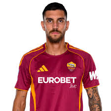

35
 ROMA · ITALIA
ROMA · ITALIA
La storia, la rosa e i protagonisti dei biancocelesti.
Fondata nel 1900, la Società Sportiva Lazio è uno dei club più antichi e prestigiosi del calcio italiano. Biancoceleste, romana e legata indissolubilmente alla città eterna, la Lazio ha costruito la propria storia attraverso grandi campioni, trofei nazionali e momenti memorabili in campo europeo.
 2
Serie A
2
Serie A
 7
Coppa Italia
7
Coppa Italia
 5
Supercoppa Italiana
5
Supercoppa Italiana
 1
Coppa delle Coppe
1
Coppa delle Coppe
1 Supercoppa UEFA





Italia

#9

#9

#11

#13
La Società Sportiva Lazio viene fondata il 9 gennaio 1900 nel cuore di Roma, dando vita a una delle istituzioni sportive più importanti della capitale.
La squadra guidata da Tommaso Maestrelli conquista il primo Scudetto della propria storia, con Giorgio Chinaglia protagonista assoluto.
La Lazio conquista la Coppa delle Coppe battendo il Maiorca a Birmingham e, pochi mesi dopo, la Supercoppa UEFA contro il Manchester United.
Nell'anno del centenario arriva il secondo Scudetto. La squadra di Sven-Göran Eriksson completa una stagione storica conquistando anche la Coppa Italia.
Gennaro Gattuso diventa il nuovo allenatore biancoceleste. La Lazio inaugura una nuova fase con una rosa rinnovata e ambizioni diverse.